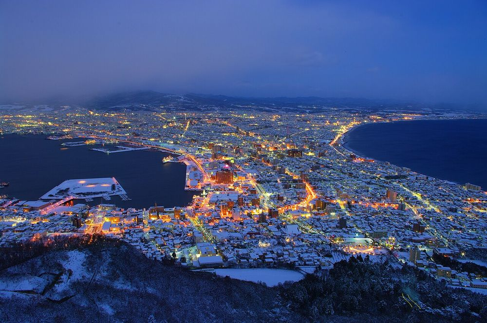
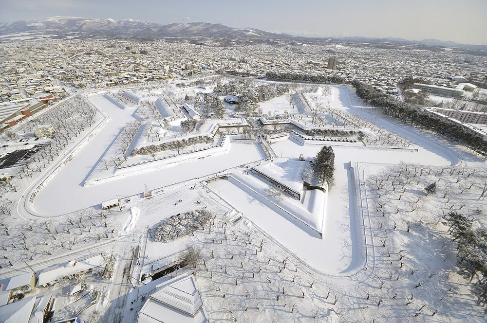
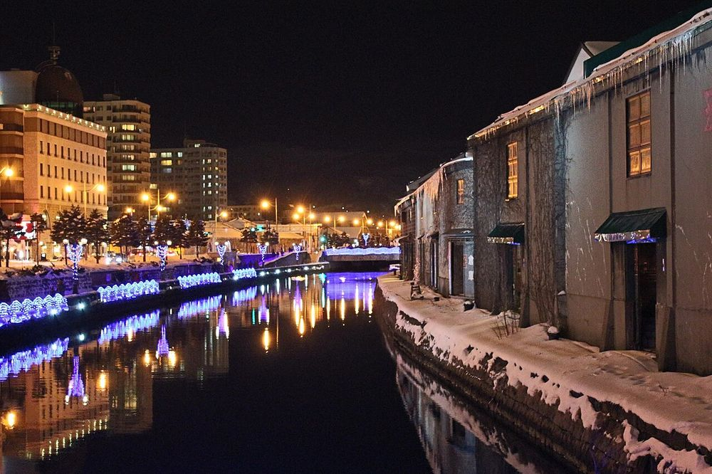
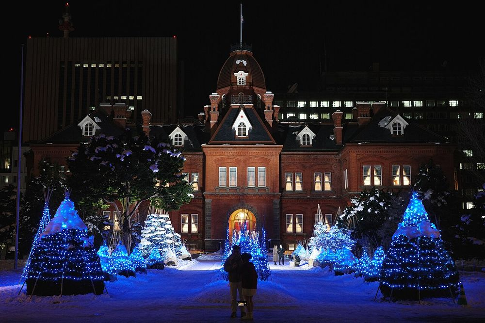

冬季札幌与函馆
12 月坐火车玩六天：札幌的明治建筑和圣诞灯饰、北海道开拓村、小樽运河与彩色玻璃、白老 Upopoy 国立阿伊努民族博物馆，以及函馆的五棱郭、元町教堂和夜景。
- 天数
- 6 天
- 里程
- 火车约 370 公里
- 最佳季节
- 12 月（灯饰）/ 2 月（冰雪节）
- 每人（不含机票）
- 约 CNY 5,630 起
2026 年 11 月为 12 月的行程调研，并用另一个研究工具交叉核对。开放时间和价格会变，出发前请再确认。 汇率按 1 日元 ≈ 0.0417 元人民币（2026 年 11 月 27 日）。
为什么选札幌与函馆
适合想看历史和冬日风景、又不想开车的人：明治时代的札幌、开拓者建筑的露天博物馆、小樽运河与彩色玻璃、国立阿伊努民族博物馆，还有函馆的星形要塞和港边教堂，一路坐特急“北斗”串起来。全程只住两家酒店，行李用快递提前寄走。
12 月： 寒冷，常下雪。札幌白天约 0–2°C，夜里 −4 至 −6°C；函馆稍暖但风大。下午 4 点左右天黑，所以晚上看灯：两座城市的圣诞灯饰和市集都开到 12 月 25 日，小樽运河有蓝色冬季灯光，五棱郭护城河傍晚也会点灯。人和价格都远低于 2 月冰雪节高峰。
最佳季节： 12 月中旬到圣诞节前最适合这条路线：札幌和函馆的圣诞灯饰与市集开到 12 月 25 日，开拓村和小樽通常已有积雪，人比 2 月少得多，价格也低。12 月上旬更清静，但雪少一些。2 月上旬是另一个高峰：札幌冰雪节和小樽雪灯之路，雪最深，价格也最高。避开新年那一周（闭馆多、票价最高）；2 月下旬至 3 月开始融雪，天色灰，价格便宜。
路线： 新千岁机场 → 札幌（住 3 晚，开拓村和小樽当天往返）→ 白老看 Upopoy → 函馆（住 2 晚）→ 函馆机场。6 天，火车约 370 公里，不用租车。
亮点
- 札幌的明治地标：钟楼和红砖北海道厅旧本厅舍，加上大通公园的白色灯树节和圣诞市集
- 北海道开拓村：50 多栋开拓时期的老建筑，冬天覆盖着雪
- 小樽：黄昏的运河、似鸟美术馆的蒂芙尼彩窗、辰野金吾设计的日本银行旧小樽支店
- 南下途中的 Upopoy 国立阿伊努民族博物馆与公园
- 函馆：从五棱郭塔俯瞰星形要塞、元町的教堂、圣诞梦幻节烟花和函馆山夜景
- 北海道美食：成吉思汗烤羊肉、味噌拉面、小樽寿司、函馆乌贼和朝市
须知
- Upopoy 和大多数博物馆周一休馆，所以第 2 天和第 4 天不要排在周一。小樽的似鸟美术馆和日本银行金融资料馆周三休馆，所以第 3 天不要排在周三。
- 第 2 天晚上把行李箱从札幌酒店快递到函馆酒店，第 3、4 天轻装出行（见火车与行李）。
- 提前预订：小樽伊势鮨、鮨西光、鮨处木はら，以及北斗号座位（全车指定席）。
- 大雪可能让北斗号晚点，大风会让函馆山缆车停运，所以在函馆留一个备用晚上。
两种玩法
💰 最划算
- 住： 札幌 Cross Hotel（两人一晚含早约 26,300 日元（约 CNY 1,100）；顶楼大浴场），然后函馆国际酒店（含早一晚约 36,000 日元（约 CNY 1,500）；带露天风吕的温泉）。
- 吃： 札幌吃达摩成吉思汗烤肉、味噌拉面和汤咖喱，小樽吃伊势鮨，函馆吃いか清的乌贼和あじさい的盐味拉面。
- 每人约 CNY 5,630–6,090 （不含机票）。
✨ 最佳体验
- 住： 札幌格兰大酒店（1934 年开业；含早一晚约 28,800 日元（约 CNY 1,200）），然后函馆湾 La Vista（屋顶温泉俯瞰港湾；不含早一晚约 65,000–70,000 日元（约 CNY 2,710–2,920））。
- 加上： 鮨西光的主厨套餐、汤之川木はら的寿司午餐、红砖厅舍八角塔观景和札幌啤酒博物馆。
- 每人约 CNY 8,370–9,250 （不含机票）。
两种玩法路线和火车相同，只是酒店、几顿饭和附加项目不同。
路线地图
● 带序号：按顺序的住宿城市 ● 移动日途经的地点 ● 从住地出发的一日游（虚线）。点击地点可看是第几天。 ✈️ 机场。 全程坐火车：线条只是各站之间的直线示意，不是铁路线路。
行程
每天大约 10:00 出门，每半天只排一个主要景点。想多看的话，每天都有“有兴趣可以加上”的选项。
下午：钟楼（350 日元（约 CNY 15），开到 17:10），然后红砖北海道厅旧本厅舍（300 日元（约 CNY 15），开到 21:00）。
傍晚：大通公园的白色灯树节（16:30 起）和慕尼黑圣诞市集（开到 21:00；都到 12 月 25 日）。
晚餐：达摩本店的成吉思汗烤羊肉（不接受预约；17:00–17:30 到可避开排队）。
有兴趣可以加上：红砖厅舍八角塔观景（1,200 日元（约 CNY 50），每场 7 人，30 天前起网上预约）。
上午：北海道开拓村（1,000 日元（约 CNY 40）；留 2–2.5 小时；马拉雪橇 12 月中旬起只在周末和节假日运行）。
午餐：坐巴士回新札幌，在 Sun Piazza 的醤油屋本店吃酱油拉面。
下午：开拓村旁边的北海道博物馆（800 日元（约 CNY 35）；16:00 停止入馆）。它 2026 年整修后重开，但我们查询时还没公布 12 月的开放细节，出发前一周再看一下。如果闭馆，改去札幌市中心的北海道立近代美术馆（510 日元（约 CNY 20））。
晚上：把行李箱交给酒店前台，快递到函馆酒店，第 4 天送达（见火车与行李）。
有兴趣可以加上：回程顺路去札幌啤酒博物馆（1,000 日元（约 CNY 40）；17:30 停止入馆）。
上午：从南小樽一路下坡走：小樽音乐盒堂（免费），然后是堺町通和北一硝子。
午餐：伊势鮨吃寿司（订 12:00–13:00 的位子）。
下午：运河、似鸟美术馆（蒂芙尼和英国教堂彩色玻璃，1,200 日元（约 CNY 50））和日本银行旧小樽支店金融资料馆（免费）。两处都是周三休馆。黄昏留下来看运河灯光（约 16:00 日落）。
🚆 小樽 → 札幌 · 34 km · 约 35 分钟 约 17:00 回程。晚餐：薄野的けやき味噌拉面。
有兴趣可以加上：小樽再往前 25 分钟的 Nikka 余市蒸馏所（需预约；12 月 23 日至 1 月 7 日闭馆），但只适合放弃小樽博物馆的情况。
中午和下午：Upopoy 国立阿伊努民族博物馆与公园，约 12:10–15:30（1,200 日元（约 CNY 50），网上购票 1,000 日元（约 CNY 40））。演出时间当天公布，进门先拍下入口的时刻表。在园内咖啡厅吃午饭。
🚆 白老 → 函馆 · 226 km · 约 2 小时 45 分 例如白老 15:47 → 函馆 18:30。
晚餐：函馆站旁いか清的乌贼料理。
有兴趣可以加上：改坐早一班北斗（白老 14:29 → 函馆 17:13），当晚就能赶上 18:00 的圣诞梦幻节烟花；Upopoy 只剩两小时。
上午：五棱郭塔（1,200 日元（约 CNY 50））俯瞰星形要塞，然后参观要塞里的箱馆奉行所（500 日元（约 CNY 20））。
午餐：汤之川的鮨处木はら（订 12:00；电车约 15 分钟），或五棱郭塔旁あじさい的盐味拉面。
下午：坐电车去元町，约 14:00–16:00：东正教堂和天主教堂、旧函馆区公会堂和旧英国领事馆，以及北方民族资料馆。
晚上：18:00 红砖仓库前的圣诞梦幻节烟花，然后坐函馆山缆车看夜景（往返 1,800 日元（约 CNY 75）；最后上山 20:30）。晚餐在车站附近吃。
有兴趣可以加上：傍晚如果在五棱郭附近，可以看护城河灯饰“五稜星之梦”（日落至 19:00，免费）。市电一日券（800 日元（约 CNY 35））坐 3 次以上就划算。
从车站坐机场巴士约 20 分钟（700 日元（约 CNY 30））。从函馆经东京羽田回程：同一张联程票行李可直挂；分开出票的话，在羽田要提行李再值机，留 2.5–3 小时。
有兴趣可以加上：坐巴士前再逛一下金森红砖仓库（商店 9:30 开门）。
天气不好时：如果第 4 天大雪让北斗停运，就坐晚一点的车并放弃 Upopoy。如果第 5 天大风让缆车停运，可以换到第 4 天晚上再试，或以五棱郭塔的景色代替。
主要景点






.jpg){kind=link}

_-_panoramio_(4).jpg){kind=link}
- 札幌钟楼：1878 年札幌农学校的演武场，明治札幌的象征；350 日元（约 CNY 15）。
- 红砖厅舍（北海道厅旧本厅舍）：1888 年的新巴洛克风格红砖建筑，2025 年整修后全面重开，展示开拓使、阿伊努和北方领土的历史；300 日元（约 CNY 15），八角塔 1,200 日元（约 CNY 50）。
- 北海道开拓村：占地 54 公顷的露天博物馆，迁建了 50 多栋明治到昭和初期的建筑；1,000 日元（约 CNY 40）。
- 北海道博物馆：北海道的历史，从史前、阿伊努文化到开拓者的生活；800 日元（约 CNY 35）。
- 小樽：1923 年的运河和石造仓库、用油灯照明的 1891 年鲱鱼仓库里的北一硝子、由四座旧银行和仓库组成的似鸟美术馆，以及东京站设计者辰野金吾设计的日本银行旧小樽支店（免费）。
- 白老 Upopoy：日本国立的阿伊努文化中心（2020 年）：博物馆、传统村落、歌舞和手工艺；1,200 日元（约 CNY 50）。
- 五棱郭：1864 年的星形要塞，1869 年虾夷共和国最后的据点；五棱郭塔（1,200 日元（约 CNY 50））和复原的箱馆奉行所（500 日元（约 CNY 20））。
- 函馆元町：1916 年的东正教堂、天主教堂、1910 年的旧函馆区公会堂和旧英国领事馆；两馆通票 500 日元（约 CNY 20）。
- 函馆山：经典夜景，冬季只能坐缆车上山（道路封闭）；往返 1,800 日元（约 CNY 75）。日落后一两个小时山顶人最多。
2026 年 12 月的活动和展览
- 札幌白色灯树节，大通公园：16:30–22:00，到 12 月 25 日（站前大道的灯饰持续到 2 月）。免费。
- 慕尼黑圣诞市集，大通公园：11:00–21:00，到 12 月 25 日。免费入场；摊位只收电子支付。
- 北海道立近代美术馆：馆藏展《我的创作方式》（510 日元（约 CNY 20））到 12 月 20 日；新道展 70 周年展（600 日元（约 CNY 25））12 月 10 日开幕；12 月 21 日至 28 日换展闭馆。
- 小樽运河：11 月至 1 月有蓝色冬季 LED 灯光，日落后煤气灯点亮。雪灯之路在 2 月，不在 12 月。
- 似鸟美术馆浮世绘馆：斋藤清版画展 12 月 12 日开幕（1,400 日元（约 CNY 60））。
- 北海道开拓村：12 月有冬季体验活动；马拉雪橇 12 月中旬起在周末和节假日运行，要看积雪。
- 函馆圣诞梦幻节，金森红砖仓库：海上的巨型圣诞树，每天 16:30 起点灯，到 12 月 25 日，18:00 放烟花（天气不好取消）。免费。
- 五稜星之梦：五棱郭护城河灯饰，日落至 19:00，12 月至 2 月底。免费。
- 北海道立函馆美术馆：12 月中旬换展闭馆（12 月 14 日至 21 日）；下一档展览 12 月 22 日开幕。
- Upopoy：整个冬季每天有传统舞蹈和叙事诗表演（时间当天公布）。2026/27 冬季还没公布灯饰活动。
博物馆
| 博物馆 | 开放时间 | 休馆 | 门票 |
|---|---|---|---|
| 札幌钟楼 | 8:45–17:10 | 1 月 1 日至 3 日（新年） | 350 日元（约 CNY 15） |
| 红砖厅舍 | 8:45–21:00，20:30 停止入馆 | 12 月 29 日至 1 月 3 日 | 300 日元（约 CNY 15）；八角塔 1,200 日元（约 CNY 50） |
| 札幌啤酒博物馆 | 11:00–18:00，17:30 停止入馆 | 12 月 31 日 | 1,000 日元（约 CNY 40） |
| 北海道立近代美术馆 | 9:30–17:00，16:30 停止入馆 | 周一；12 月 21 日至 28 日（换展）；新年 | 510 日元（约 CNY 20） |
| 北海道开拓村 | 9:00–16:30，16:00 停止入场 | 周一；12 月 29 日至 1 月 3 日 | 1,000 日元（约 CNY 40） |
| 北海道博物馆 | 9:30–16:30，16:00 停止入馆 | 周一；12 月 29 日至 1 月 3 日；12 月安排请再确认 | 800 日元（约 CNY 35） |
| 似鸟美术馆（小樽艺术村） | 10:00–17:00，16:30 停止入馆 | 周三（11 月至 4 月）；新年 | 彩色玻璃馆 1,200 日元（约 CNY 50）；五馆通票 3,500 日元（约 CNY 150） |
| 日本银行旧小樽支店金融资料馆 | 10:00–17:00，16:30 停止入馆 | 周三；12 月 29 日至 1 月 5 日 | 免费 |
| 小樽音乐盒堂本馆 | 9:00–18:00 | 每天开放 | 免费 |
| Nikka 余市蒸馏所（小樽再往前 25 分钟） | 导览约 9:30–14:30，需预约 | 12 月 23 日至 1 月 7 日 | 导览免费（预约时确认） |
| Upopoy | 9:00–17:00；园区 16:00 停止入场 | 周一；12 月 28 日至 1 月 4 日 | 1,200 日元（约 CNY 50）；网上 1,000 日元（约 CNY 40） |
| 五棱郭塔 | 9:00–18:00，17:50 停止售票 | 每天开放 | 1,200 日元（约 CNY 50） |
| 箱馆奉行所 | 9:00–17:00，16:45 停止售票 | 12 月 31 日至 1 月 3 日 | 500 日元（约 CNY 20） |
| 旧函馆区公会堂 | 9:00–17:00 | 12 月 31 日至 1 月 3 日 | 300 日元（约 CNY 15） |
| 旧英国领事馆 | 9:00–17:00 | 12 月 31 日至 1 月 1 日 | 300 日元（约 CNY 15） |
| 北方民族资料馆 | 9:00–17:00 | 12 月 31 日至 1 月 3 日；另有馆内整理日，先打电话 | 300 日元（约 CNY 15） |
| 函馆东正教堂 | 10:00–16:00（周日 13:00 起） | 12 月 25 日至 2 月底暂停参观 | 捐款 200 日元（约 CNY 10） |
| 函馆山缆车 | 10:00–21:00，最后上山 20:30 | 大风停运 | 往返 1,800 日元（约 CNY 75） |
元町通票：两馆 500 日元（约 CNY 20），三馆 720 日元（约 CNY 30），四馆 840 日元（约 CNY 35）。这里大多数博物馆周一休馆。
吃什么
食べログ 3.68 · 2,050 条 标签为食べログ评分：3.0 为一般，3.5 以上很好。2026 年 11 月下旬读取。我们的标准是 3.4 分以上、50 条以上评价，低于标准的会注明。💰 和 ✨ 标出两种玩法不同的地方。
新千岁机场
- 午餐：国内线航站楼 3 楼的北海道拉面道场，十家拉面店并排，约 1,000–1,500 日元（约 CNY 40–65）；与国际线航站楼有通道相连。未按我们的食べログ标准核查。
开拓村与新札幌
- 午餐：醤油屋本店 Sun Piazza 店 食べログ 3.59–3.60，北海道拉面百名店，就在地铁新札幌站 3 号出口，1,000–1,500 日元（约 CNY 40–65）；不接受预约。开拓村里只有简单餐食。
札幌
- 第 1 天晚餐：成吉思汗だるま本店 食べログ 3.68 · 2,050 条，铁锅成吉思汗烤羊肉，3,000–5,000 日元（约 CNY 130–210）；17:00 营业到深夜，不接受预约，17:00–17:30 到最好。排队短些的：だるま 4·4 店 食べログ 3.53 · 821 条。
- 第 2 天晚餐：✨ 鮨西光 食べログ 3.60–3.75 · 84 条，10 席吧台，只用北海道鱼，主厨套餐 22,000 日元（约 CNY 920） 另加 10% 服务费；只接受预约（TableCheck），周日和节假日休。💰 GARAKU 汤咖喱 食べログ 3.43 · 159 条，1,500–2,500 日元（约 CNY 65–100）；或氷雪の門的螃蟹会席 食べログ 3.54 · 298 条，10,000–15,000 日元（约 CNY 420–630）（每月有一天不定休，先打电话）。
- 第 3 天晚餐：けやき 薄野本店 食べログ 3.70 · 3,200 条，蔬菜多的味噌拉面，1,100–1,500 日元（约 CNY 45–65）；不接受预约，常在室外排队。或すみれ 薄野店 食べログ 3.58 · 2,100 条。
小樽
- 午餐：伊势鮨 食べログ 3.67–3.70 · 760 条，吧台寿司，有积丹海胆和冬季鱼，约 5,000–10,000 日元（约 CNY 210–420）；周三和部分周二休。提前两个月起可电话预约（11:00 起），或通过 JPNEAZY 网上预约（手续费 10–15%）。或おたる政寿司本店 食べログ 3.59 · 1,084 条，3,000–6,000 日元（约 CNY 130–250）；不用预约的备选：小樽站内的伊势鮨站中店 食べログ 3.54–3.57。
白老（Upopoy）
- 午餐：Upopoy 园内的餐厅，阿伊努风味套餐 食べログ 3.06–3.24（低于我们的标准，但不用出园）。白老牛餐厅需要打车，不适合这一天。
函馆
- 第 4 天晚餐：车站旁的いか清 大门店 食べログ 3.48–3.51 · 288 条，乌贼刺身（有货时是活乌贼）、乌贼面和烤乌贼，5,000–8,000 日元（约 CNY 210–330）；17:00–23:30，每天营业，可预约。或根ぼっけ 食べログ 3.47–3.49 · 300 条，大条本地远东多线鱼，4,000–5,000 日元（约 CNY 170–210）。
- 第 5 天午餐：✨ 汤之川的鮨处木はら 食べログ 3.62–3.65 · 433 条，主厨套餐有冬季函馆乌贼、海胆和昆布腌鱼，约 10,000–15,000 日元（约 CNY 420–630）（食べログ晚餐价位，午餐可能便宜些）；只接受电话预约；周三和每月两个不定期周二休。💰 五棱郭塔旁的あじさい本店 食べログ 3.62–3.65 · 2,100 条，清汤盐味拉面，1,000–1,500 日元（约 CNY 40–65）（每月第四个周三休）。
- 第 5 天晚餐：うにむらかみ函馆站前店 食べログ 3.61 · 192 条，无添加海胆盖饭，约 4,000–7,000 日元（约 CNY 170–290）；17:30–21:30，可预约。或上面的根ぼっけ。
- 第 6 天早午餐：朝市里的きくよ食堂本店 食べログ 3.49 · 1,428 条，元祖海胆、三文鱼子、扇贝三色盖饭，2,000–4,000 日元（约 CNY 85–170）；冬季 6:00–13:30，每天营业。或うにむらかみ函馆本店 食べログ 3.58 · 1,255 条，4,000–7,000 日元（约 CNY 170–290）；周末不接受预约，周三休。
购物
- 大通公园：慕尼黑圣诞市集，有圣诞饰品、热红酒和德国小吃（到 12 月 25 日）。
- 二条市场，19 世纪 90 年代起的“札幌厨房”：螃蟹、三文鱼子和海鲜干货；约 7:00–18:00，各店不同。
- 札幌站的商场和百货店：北海道点心和伴手礼，可以寄回或带上火车。
- 小樽堺町通：北一硝子等玻璃工房、音乐盒堂的商店和西点店；多数 9:00–18:00。
- Upopoy 商店：阿伊努刺绣、木雕和阿伊努文化书籍。
- 金森红砖仓库：1887–1909 年保税仓库里的商店和咖啡馆；9:30–19:00，全年营业。
- 函馆朝市：乌贼、螃蟹、昆布和海鲜干货；清晨至约 14:00。
- 函馆机场：登机前买北海道点心和海产伴手礼。
住哪里
两人一间、含税价，2026 年 11 月下旬在 Booking.com 查询 12 月中旬平日入住；酒店可能另收城市住宿税。请向两家酒店确认能否代寄和代收快递行李。
Cross Hotel Sapporo
8.8含早一晚约 26,300 日元（约 CNY 1,100）。顶楼大浴场带露天区；距 JR 札幌站和大通各约 5 分钟。
Sapporo Grand Hotel
8.8含早一晚约 28,800 日元（约 CNY 1,200）。1934 年开业，北海道第一家西式酒店；没有大浴场。官网 FAQ 说不提供到机场或车站的行李配送，请确认能否代寄到下一家酒店。
Keio Prelia Hotel Sapporo
8.9不含早一晚约 24,000 日元（约 CNY 1,000）。免费公共浴场；提供行李寄送服务。房间较小（20 平方米）。
Hakodate Kokusai Hotel
8.3含海鲜早餐一晚约 36,000 日元（约 CNY 1,500）。顶楼天然温泉带露天风吕；距车站 8 分钟，距朝市 5 分钟。
La Vista Hakodate Bay
9.0（Trip.com）不含早一晚约 65,000–70,000 日元（约 CNY 2,710–2,920）（乐天上查到；Booking.com 没有）。屋顶露天温泉俯瞰港湾，早餐很有名；距电车站 3 分钟。
La’gent Stay Hakodate Ekimae
8.7不含早一晚约 48,200 日元（约 CNY 2,010）（只剩家庭房）。屋顶温泉和桑拿；有大和运输快递服务。
预算
每人，两人一间，不含机票。2026 年 11 月估算。 汇率按 1 日元 ≈ 0.0417 元人民币（2026 年 11 月 27 日）。
- 💰 最划算： 约 CNY 5,630–6,090 (酒店 3,150 · 火车、巴士和行李快递 840–880 · 餐饮 1,250–1,670 · 门票 390)
- ✨ 最佳体验： 约 CNY 8,370–9,250 (酒店 4,510–4,720 · 火车、巴士和行李快递 840–880 · 餐饮 2,540–3,170 · 门票和附加项目 480)
火车：JR 车费每人约 15,000 日元（约 CNY 630）（机场快速、小樽往返、新札幌往返和两段北斗）。酒店：两种玩法在札幌都含早餐；La Vista 不含早。不包括：机票、La Vista 的早餐、城市住宿税、购物、旅行保险，以及 10–15% 的备用金。
火车与行李
火车
- 新千岁机场 → 札幌：快速“机场号”，约 37 分钟，约每 12 分钟一班，1,230 日元（约 CNY 50）。
- 札幌 ⇄ 小樽：快速约 32–35 分钟，普通车约 45 分钟，单程 800 日元（约 CNY 35）。余市在小樽再往前约 25 分钟。
- 开拓村：坐 JR 或地铁东西线到新札幌，再从 10 号站台坐 JR 北海道巴士“新22”（约 15 分钟，约 210 日元（约 CNY 10））。
- 特急北斗（札幌 → 函馆全程约 3 小时 45 分）：全车指定席。每天 11 班中有 9 班停白老，大约每小时一班。第 4 天好用的组合：札幌 10:56 → 白老 11:57，然后白老 15:47 → 函馆 18:30（早一班 14:29 → 17:13；晚一班 16:47 → 19:29）。时刻为 2026 年 11 月下旬的时刻表。
- 票价：札幌 → 函馆直达指定席 9,770 日元（约 CNY 410）。在白老下车要分两段买票，估计约 3,700–4,000 日元（约 CNY 150–170） 和 8,000–8,500 日元（约 CNY 330–350）。可在 JR 东日本的 Eki-net 订票（“Tokuda-ne”折扣 14 天前开售），或在 JR 售票处购买。
- 周游券不划算。这趟行程的 JR 车费每人约 15,000 日元（约 CNY 630）；5 日北海道铁路周游券要 22,000 日元（约 CNY 920）。
- 雪和运行：北斗所走的线路 2026 年夏末曾被冲毁，现已恢复，部分路段限速。冬季大雪可能导致晚点或停运：第 4 天早上查看 JR 北海道的运行信息。
- 函馆：市电可到车站、五棱郭、汤之川、元町和缆车站；一日券 800 日元（约 CNY 35）。五棱郭塔接驳巴士 300 日元（约 CNY 15），机场巴士 700 日元（约 CNY 30）（约 20 分钟）。
- 不需要租车。如果哪天真需要，可在札幌或函馆站租还。外国驾照需要 1949 年日内瓦公约国际驾照，部分国家需要 JAF 官方翻译件。
提前寄行李（宅急便）
日本的门到门快递可以在酒店之间运送行李箱，几乎所有酒店前台都能办理：大和运输（宅急便，黑猫标志）、佐川急便或日本邮政（Yu-Pack）。这趟行程把行李从札幌酒店寄到函馆酒店，第 3、4 天轻装出行。
- 订房时：记下函馆酒店的日文完整地址、邮编和电话。
- 第 1 或第 2 天：问札幌酒店前台用哪家快递、几点前收件。
- 大约提前两天：发邮件告诉函馆酒店，有行李箱会快递到店，入住日是第 4 天，请他们代为保管。
- 第 2 天晚上：把行李箱交给札幌酒店前台，填写运单，指定第 4 天送达，并付款。酒店收件常在上午 10:00 左右，所以前一晚交最稳妥，下雪也可能多花一天。保留收据或单号。
- 第 3–4 天：在快递公司网站上追踪。
- 第 4 天入住：在函馆酒店前台领取，或直接送到房间。
运单（送り状）： 前台通常会帮忙填写。收件人（お届け先）：函馆酒店的名称、地址、邮编和电话，加上你的名字 + 様（宿泊者）和入住日期。送达日期（お届け予定日）：第 4 天，时间段选“午前中”（上午）。寄件人（ご依頼主）：你的名字、札幌酒店地址和一个电话号码。物品（品名）：衣類（衣物）。不要寄贵重物品、电池或充电宝、当天要用的药和护照。
费用： 按尺寸（长 + 宽 + 高）和重量计价，多数用现金付。大和运输北海道内：140 尺寸 2,090 日元（约 CNY 85），160 尺寸 2,410 日元（约 CNY 100），180 尺寸 3,030 日元（约 CNY 130）。中号行李箱约 2,000–2,500 日元（约 CNY 85–100）。以前台报价为准。
第 3、4 天的随身包： 一晚的衣服、洗漱用品、充电器、药品、护照，以及去 Upopoy 用的保暖衣物（部分在户外）。
如果寄不了： 就带着行李箱坐北斗（每节车厢两端有行李区）。Upopoy 付费区不能带行李箱：用入口的大号投币柜（500 日元（约 CNY 20），只收现金）或白老站的观光信息中心（500 日元（约 CNY 20），8:00–17:30）。回程不用寄：函馆机场坐巴士只要 20 分钟。
信息来源
2026 年 11 月 28 日查询，再用另一个研究工具交叉核对；有出入的地方以官方网站为准。餐厅评分来自食べログ，可能会有变动。火车时刻为 2026 年 11 月下旬的时刻表；白老两段票价为估算。酒店评分为 Booking.com 住客评分（满分 10；La Vista 为 Trip.com）。所有内容均以我们自己的话概括。 调研方法 →
- 札幌： 钟楼 · 红砖厅舍 · 北海道博物馆 · 开拓村 · 札幌啤酒博物馆 · 近代美术馆 · 圣诞市集 · 白色灯树节 · 二条市场
- 小樽： 似鸟美术馆 · 日本银行金融资料馆 · 北一硝子 · 音乐盒堂 · Nikka Yoichi
- Upopoy： 开放时间 · 节目 · 寄存
- 函馆： 五棱郭塔 · 箱馆奉行所 · 东正教堂 · 函馆山缆车 · 金森红砖仓库 · 圣诞梦幻节 · 朝市 · 函馆美术馆
- 交通： JR Hokkaido · 北海道铁路周游券 · Eki-net · 函馆市电 · 函馆巴士 · 函馆机场巴士 · 大和运输运费 · 羽田转机
- 餐饮和住宿： 食べログ · Booking.com（价格和住客评分，2026 年 11 月下旬）· La Vista 参考乐天旅游和 Trip.com
- 照片 （Wikimedia Commons）：见每张图片下的署名。